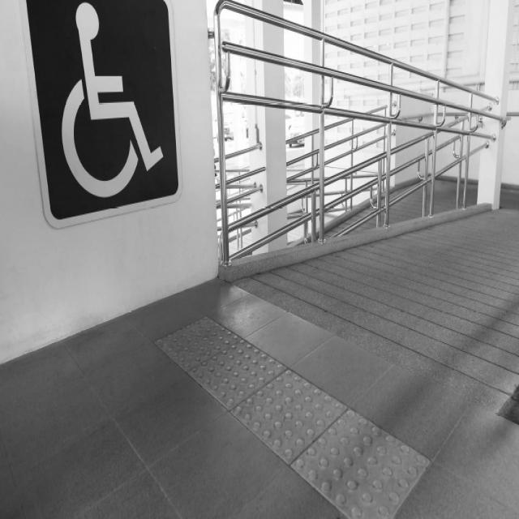
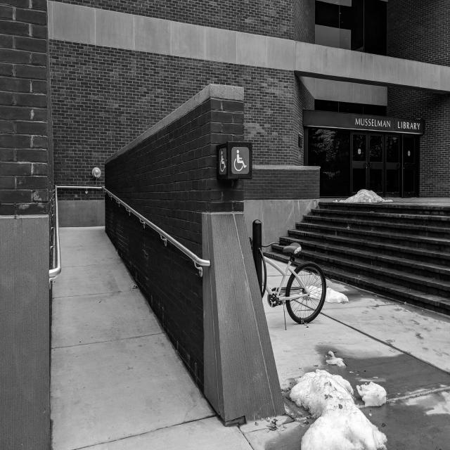
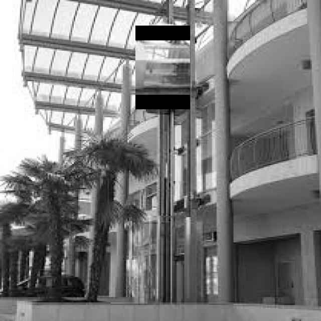
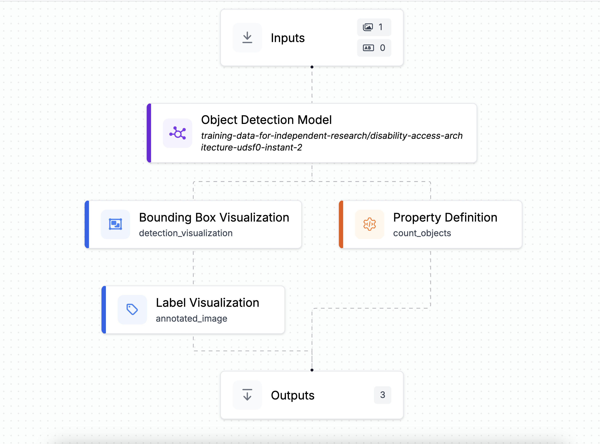
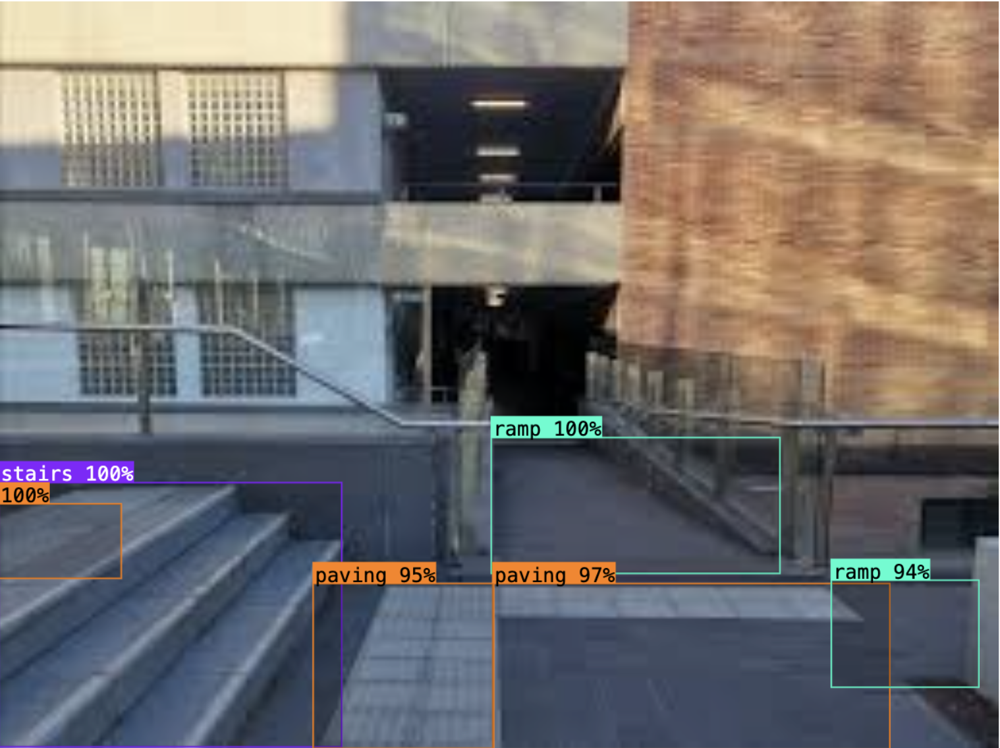
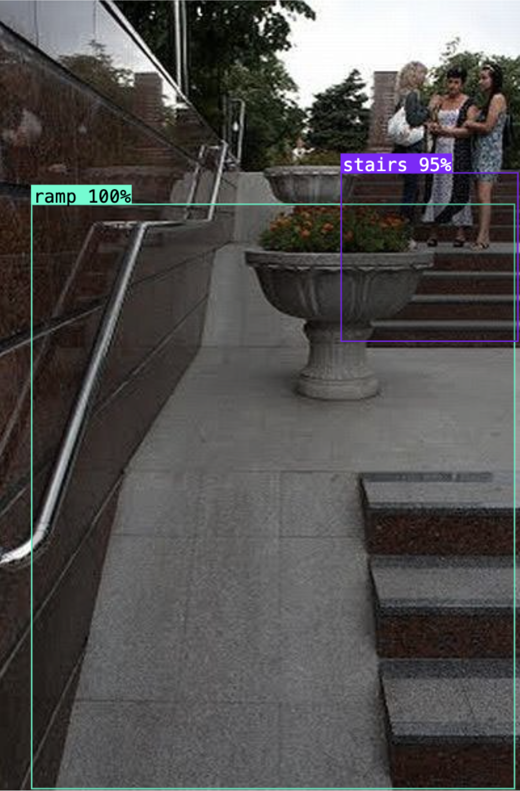

Our computer vision model is trained on diverse architectural accessibility features. These training images represent the three key categories our system learns to identify: sidewalks, ramps, and elevators. Each category helps the model understand different aspects of accessible building design.

Training images of sidewalks help our model identify pedestrian pathways, curb cuts, and ground-level accessibility features. The model learns to recognize width, surface texture, and obstacle-free paths.

Ramp training data teaches the model to identify inclined surfaces, handrails, and proper gradients. This enables detection of wheelchair-accessible entrances and transitions between elevation levels.

Elevator training images help the model recognize vertical accessibility solutions. The system learns to identify elevator doors, control panels, and entrance configurations for multi-story accessibility.

Our future implementation aims to create a fully automated system that can analyze architectural images and provide instant accessibility assessments. This computer vision approach will revolutionize how we evaluate buildings for accessibility compliance.
We're developing a convolutional neural network (CNN) trained on thousands of architectural images. The model uses transfer learning from established computer vision architectures, fine-tuned specifically for accessibility features. Our approach includes:
This implementation will enable architects, building managers, and accessibility advocates to quickly assess structures. We aim to deploy a beta version within the next year, with continuous improvements based on user feedback and expanding training data.
Our annotated images demonstrate the model's capability to identify and classify accessibility features in real-world scenarios. These results show bounding boxes and labels automatically generated by our computer vision system.

This annotated image shows our model successfully detecting multiple accessibility features with confidence scores and classification labels. The bounding boxes indicate detected regions with their respective categories.

The second annotated result demonstrates the model's ability to handle complex architectural scenes with multiple features. The system accurately identifies and labels accessibility elements in varied lighting and angle conditions.